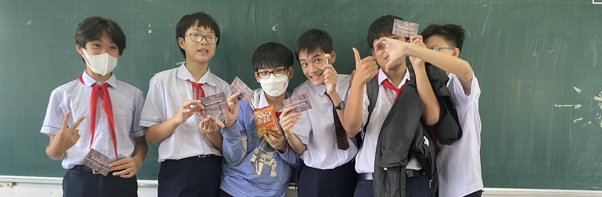

<!DOCTYPE html>
<html lang="en">

<head>
    <meta charset="UTF-8">
    <meta name="viewport" content="width=device-width, initial-scale=1.0">
    <title>EWH</title>

    <link rel="stylesheet" href="style.css">
</head>

<body class="m-6">
    <script src="app.js"></script>
    <script src="https://cdn.tailwindcss.com"></script>
    <script type="module" src="https://cdn.jsdelivr.net/gh/zerodevx/zero-md@1/src/zero-md.min.js"></script>

    <div id="wrapper" class="w-full flex justify-center">
        <div style="width: 600px;">
            <zero-md src="markdown/main.md">
                <template>
                    <link rel="stylesheet"
                        href="https://cdn.jsdelivr.net/gh/sindresorhus/github-markdown-css@4/github-markdown.min.css" />
                    <link rel="stylesheet" href="https://cdn.jsdelivr.net/gh/PrismJS/prism@1/themes/prism.min.css" />
                </template>

                <script type="text/markdown">
                    # <p align="center"> Artium </p>                    
                    
                    
                    <p align="center" style="font-style: italic"> [The Haunted House at NTP Junior Highschool](https://github.com/artium-team/NTP-Haunted-House) </p>

                    <hr/>

                    <p style="text-align: justify;"> Artium is a group of teens who love coding and are passionate about solving real-world problems with artificial intelligence. We have many projects that aim to make a positive impact on society, such as tackling world hunger, improving education, and promoting sustainability. </p>

                    ## Our Phlosophy
                    "For teens, by teens" is our philosophy and code, tools are not the only things we open source!

                    ## Our projects
                    <p style="text-align: justify;"> Some of the projects that we are working on or have completed are: </p>

                    - **FeedAI**: <p style="text-align: justify;"> An AI-powered app that connects food donors with food banks and charities, reducing food waste and hunger. </p>
                    - **EduAI**: <p style="text-align: justify;"> An AI-powered platform that provides personalized and adaptive learning for students, enhancing their academic performance and motivation. </p>
                    - **GreenAI**:<p style="text-align: justify;">  An AI-powered system that monitors and optimizes energy consumption and carbon footprint, promoting green living and sustainability. </p>
                    
                    ## How to join us
                    
                    <p style="text-align: justify;">If you are a teen who loves coding and wants to make a difference, you are welcome to join us. You can: </p>

                    <p style="text-align: justify;"> Visit our GitHub page and check out our projects. You can fork, clone, or contribute to any of them. </p>
                    <p style="text-align: justify;"> Contact us via email at artium.team@gmail.com and tell us about yourself and your interests. We will get back to you as soon as possible. </p>
                    <p style="text-align: justify;"> Follow us on social media and stay updated with our latest news and activities. You can find us on Facebook, Twitter, and [Instagram]. </p>
                    
                    ## We are looking forward to hearing from you and working with you. Together, we can code for a better world.
                </script>
            </zero-md>
        </div>
    </div>

</body>

</html>